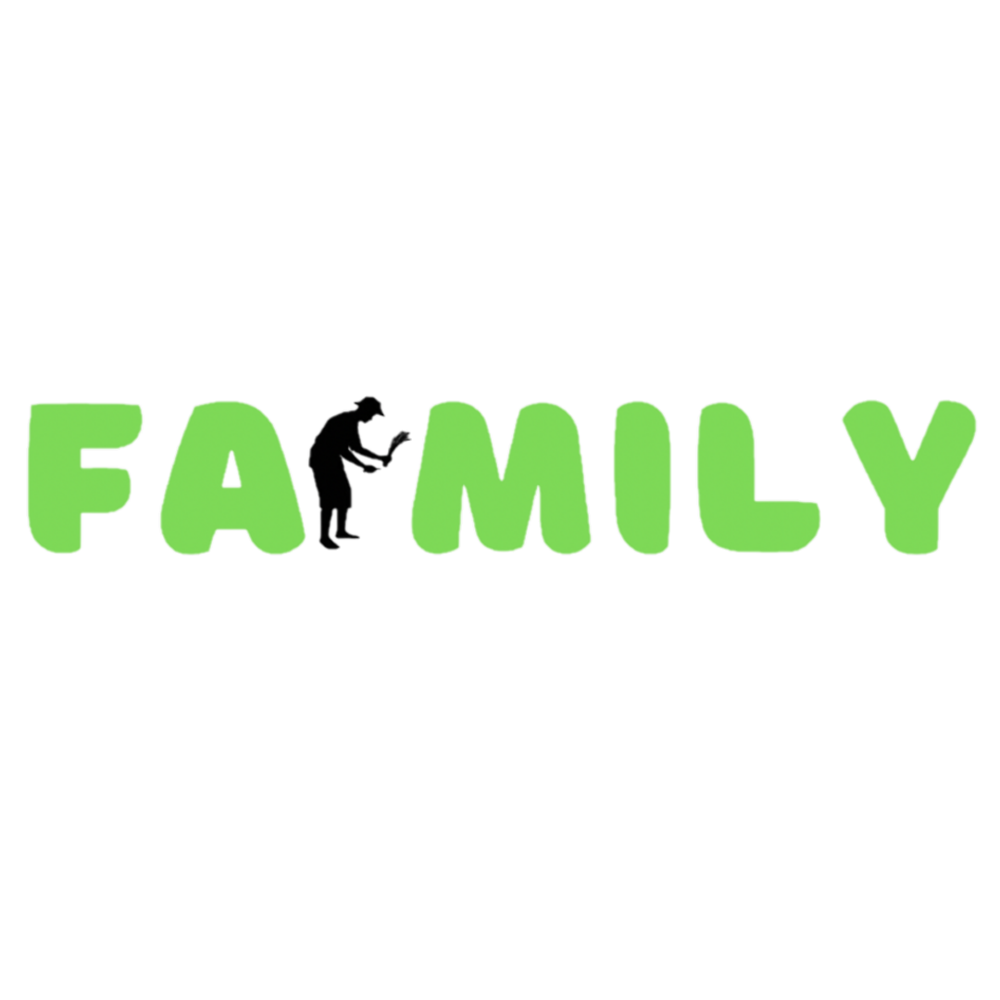

In the current vibrant market landscape, brands are constantly vying for attention, striving to craft offerings that resonates with consumers on a deeper level. Amidst this landscape, Farmily emerges as a guiding light of innovation and authenticity, leveraging its unique offerings to foster a profound sense of brand love among its customers
At the heart of Farmily's success lies its unwavering commitment to sustainability and ethical practices. From the initial stages of seed sowing and livestock breeding to the eventual delivery of the final product into the consumer's hands, every step of the journey is imbued with care and intentionality. This dedication to quality and integrity shines through in Farmily's offerings, creating a powerful connection with consumers who prioritize ethical consumption.
Farmily distinguishes itself through its extensive array of products, carefully tailored to meet the diverse needs and tastes of its clientele. Ranging from breeding initiatives to farm-fresh produce, artisanal dairy items, premium meat cuts, barbecue services, hospitality, educational programs, and more, Farmily presents a plethora of options that cater to both discerning palates and mindful consumers. This diverse selection ensures inclusivity and accessibility, accommodating a broad spectrum of preferences within its offerings.
Beyond the products themselves, Farmily places a strong emphasis on storytelling and brand narrative, inviting consumers to connect with the deeper purpose behind its operations. Through engaging content and transparent communication, Farmily shares the stories of the farmers, artisans, and communities behind each product, giving consumers a glimpse into the passion and dedication that goes into every product. This transparency fosters trust and loyalty, as consumers feel empowered to make informed choices that align with their values.
In addition, to its commitment to sustainability and storytelling, Farmily places a strong emphasis on innovation and creativity in its product development process. Whether experimenting with new farming techniques, exploring novel flavor profiles, or collaborating with local artisans, Farmily is constantly pushing the boundaries of what is possible, offering consumers exciting and unexpected experiences that keep them coming back for more.